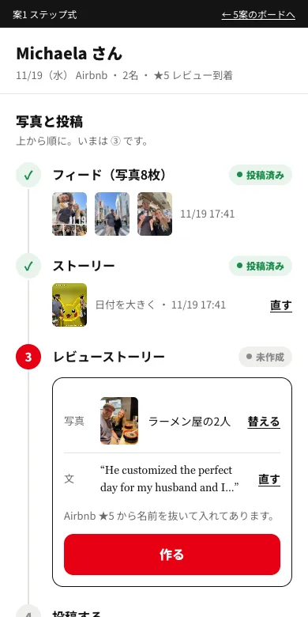
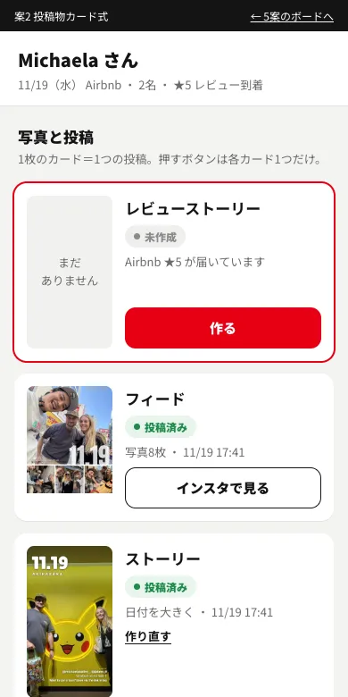
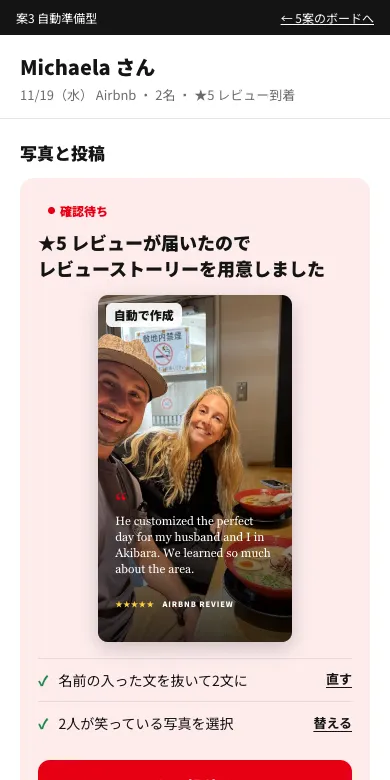
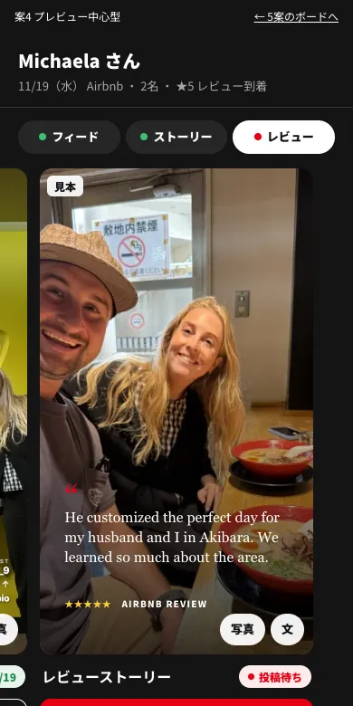
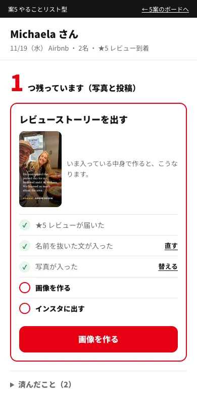
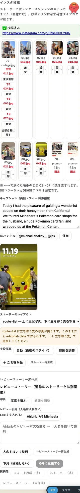

案1ステップ式
①フィード→②ストーリー→③レビュー→④投稿を縦の線でつなぐ。済んだ段は1行に縮み、いまやる段だけが開いている。
開く →

案2投稿物カード式
フィード・ストーリー・レビューストーリーを1枚ずつのカードに。カードの中は状態と大きなボタン1つだけで、やることがあるカードが上に来る。
開く →

案3自動準備型
レビューが届いた時点で、名前を抜いた引用と写真を入れた画像まで作っておく。人は見て「これで投稿する」を押すだけ。
開く →

案4プレビュー中心型
3つの投稿画像を大きく左右にめくって見比べる。調整は画像の上の「写真」「文」ボタンだけで、説明文はほぼ無い。
開く →

案5やることリスト型
「あと1つ」を大きく出し、未完了の1件だけを赤枠で見せる。済んだことは下に畳んで、開かない限り見えない。
開く →


参考：今の画面（ミカエラさん・11/20 撮影）
- スライド9枚の差替ボタン、キャプション、ストーリー、レビューストーリー、投稿先が1列に全部並んでいて、どこから手を付けるか分からない。
- 「route-list は立ち寄り先の写真が要ります。このままだと editorial-date で…」のように内部の名前がそのまま出ている。5案では「日付を大きく」「立ち寄り先つき」「ありがとう」の3つの形に言い換えた。
- レビューストーリーは「口コミを入れる→人名を抜いて整形→写真を選ぶ→再生成」が全部手作業。5案ともレビュー到着時に引用と写真が入った状態から始まり、案3は画像まで自動で作る。
- 今の「人名を抜いて整形」をミカエラさんのレビューで動かすと、引用が「! He customized…」と「!」で始まってしまう（「!!」の文の区切りを取り違えている）。自動化する時はここも直す必要がある。